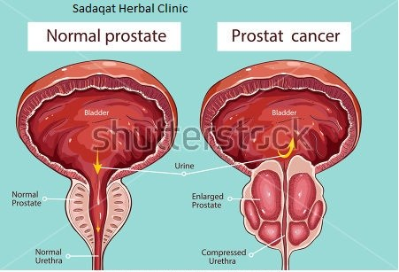

Prostate Gland
پراسٹیٹ گلینڈ کا کیاکام ہے؟
پراسٹیٹ گلینڈ دراصل مثانہ پر غدود کا بڑھ جاناہے۔اگر غدود مثانہ کی سائیڈ پر ہوتو اس کا پتہ نہیں چلتا، نہ ہی اس کی علامات ظاہر ہوتی ہیں اور نہ ہی مریض تکلیف محسوس کرتا ہے ۔ اگر غدود م ثانہ کے عین اوپر ہوتو پیشاپ کے اخراج میں رُکاوٹ کا باعث بنتی ہے ،پیشاپ کے اخراج میں نہ صرف دشواری پیش آتی ہے بلکہ مریض انتہائی تکلیف میں مبتلا رہتاہے۔ پراسٹیٹ کا رنگ سرخ براﺅن ہوتا ہے جبکہ لمبائی 3.8 سینٹی میٹرز، چوڑائی 25cm اور وزن تقریباً 25 گرام ہوت ا ہے۔ یہ مثان ے کے نیچے اور پیشاب کی نالی کے شروع کے حصہ کے قریب ہوتا ہے اورجب اس کی غدودیں بڑھ جاتی ہیں تو پیشاپ کے اخ راج میں کافی دشواری پیش آتی ہے جبکہ بعض اوقات شدت کی تکلیف کی وجہ سے( پیشاپ کی نالی) یورن بیگ لگوانا پڑتا ہے۔50 سال اوراس سے زائد عمر کے اکثر مرد پراسٹیٹ گلےنڈکی کسی نہ کسی تکلیف میں مبتلاءہیں،آج کل ےہ مرض مردوں مےںبڑھ رہا ہے۔80 سال کی عمر ک ے بعد پچھتر فیصد مرد اس مرض کا شکار ہو جاتے ہیں۔ اس مرض کے شروع ہونے میں دو علامات نہایت اہم ہوتی ہے۔ ایک تو پیشاپ کے اخراج میں دشواری اور دوسرا پیشاپ کی بار بار حاجت محسوس کرنا،جس بناءپر تشخیص کی جا سکتی ہے کہ پراسٹیٹ گلینڈ بڑھ رہ ے ہیں۔ علامات میں اضافہ؛پیشاپ کرنے کے بعدمثانہ خالی نہ ہونے کا احساس ہو تا ہے کمر کے نچلے حصہ میں کولہو اور ٹانگوں دونوں پاﺅں میں ہلکا درد رہتا ہے، پراسٹیٹ کا بڑھنا غدودوں کے سارے نظام کو متاثر کرتا ہے۔ جس وجہ سے مریض جسمانی قوت میں کمی، ذہنی اور اعصابی انتشار کی کیفیت محسوس کرتا رہتا ہے۔گو کہ سب مریضوں میں یکساں علامات نہیں پائی جاتیں۔ مندرجہ بالا علامات کے ب اوجود ایک الٹرا ساﺅنڈ ضرور کروالینا چاہئے تاکہ معلوم کیا جا سکے کہ غدود میں کس حد تک اضافہ ہوا ہے۔ بعض اوقات ای سا بھی ہوتا ہے کہ غدود سائز میں زیادہ بڑھ جاتے ہیں جس کی وجہ سے کبھی پیشاب کا اخرا ج بالکل نہیں ہوتایا نہ ہونے کے برابر ہوتا ہے ۔ کمر کے نچلے حصہ میں کولہو اور ٹانگوں دونوں پاﺅں میں ہلکا درد رہتا ہے، پراسٹیٹ کا بڑھنا غدو دوں کے سارے نظام کو متاثر کرتا ہے۔ جس وجہ سے مریض جسمانی قوت میں کمی، ذہنی اور اعصابی انتشار کی کیلیات محسوس کرتا رہتا ہے۔گو کہ سب مریضوں میں یکساں علامات نہیں پائی جاتیں۔ مندرجہ بالا علامات کے باوجود ایک الٹرا ساﺅنڈ ضرور کروالینا چاہئے تاکہ معلوم کیا جا سکے کہ غدود میں کس حد تک ا ضافہ ہوا ہے۔ بعض اوقات ایسا بھی ہوتا ہے کہ غدود سائز میں زیادہ بڑھ جاتے ہیں جس کی وجہ سے کبھی پی شاب کا اخراج بالکل نہیں ہوتایا نہ ہونے کے برابر ہوتا ہے ایسی صورت میں فوری طور پر (پیشاپ کی نالی )یورن بیگ لگوانا پڑتا ہے جو کہ تکیف دہ مرحلہ ہے۔ اس مرض سے بچنے کے لئے اگر شروع سے ہی کنٹرول کیا جائے تو کوئی وجہ نہیں کہ اس سے نہ بچا جا سکے۔ زیادہ مصالحہ دار،فرائی اشیا،اور آئرن کی زیادہ مقدار والی غذا کھانے سے پراسٹیٹ بڑھنے کے امکانات زیادہ ہوتے ہیں،اس سے نہ صرف مثانہ بلکہ پراسٹیٹ کو بھی نقصان پہنچتا ہے۔اس لئے خاص طور پراچار، سُ رخ مرچ،ریڈ میٹ،پنیراور کافی سے پرہیز کیا جائے۔اگر پراسٹیٹ آپریشن کے بعد کھانے پینے میں احتیاط کی جائے تو کوئی وجہ ن ہیں اس مرض میں دوبارہ مبتلاہوں۔ کئی مریضوں میں مرغن غذائیں پراسٹیٹ گلینڈ میں اضافہ کاباعث بنتی ہیں۔پراسٹیٹ گلینڈ کی شد ید سوزش سخت سردی اور کسی متعدی بیماری کا بھی نتیجہ ہو سکتی ہے۔ شدید قبض کی بناءپر بھی اس مرض کا ہونا ہو سکتا ہے۔